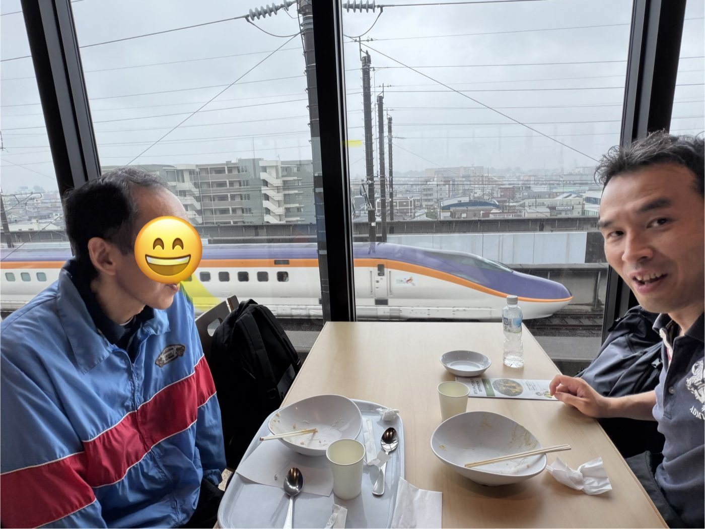

大好きな鉄道を、一日かけて
NPO法人様からのご依頼で、障害のある57歳の男性と、朝から一日ご一緒しました。 グループホームまでお迎えにあがり、大宮シャトルに乗って鉄道博物館へ。 電車の中では静かに車窓をながめていらっしゃって、その時間そのものが大切なものに見えました。
博物館ではまずお昼をとってから展示エリアへ。鉄道がお好きなことが、表情から伝わってきます。 少し気持ちが高ぶる場面もありましたが、お話ししながら、ご本人のペースを一緒につくって回りました。 途中でおやつのアップルパイ、帰りにはクッキーのお土産も選ばれて。
外の空気を吸うこと、人と話すこと、自分で選ぶこと。 それが積み重なって、生活のリズムや「次の楽しみ」につながっていくのだと思っています。
埼玉県さいたま市 鉄道博物館（大宮）／ご依頼：NPO法人様